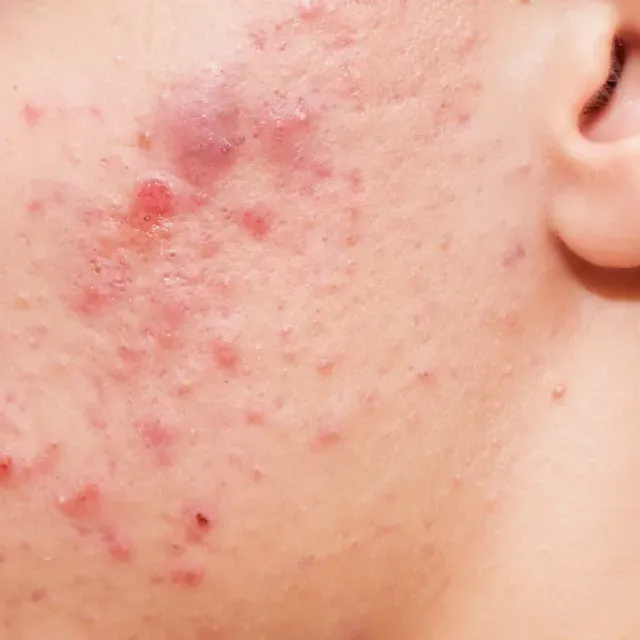

1
Exceso de sebo
Las glándulas sebáceas producen una cantidad elevada de grasa.
El acné es una enfermedad inflamatoria crónica del folículo pilosebáceo y una de las afecciones dermatológicas más frecuentes durante la adolescencia. Su origen es multifactorial.

El proceso combina exceso de sebo, obstrucción del folículo, proliferación bacteriana e inflamación. Las imágenes ayudan a mostrar tanto la condición como el cuidado cotidiano de la piel.
Las fotografías se utilizan como apoyo visual para acompañar la explicación.




Estos factores interactúan y pueden terminar produciendo las lesiones características del acné.
Las glándulas sebáceas producen una cantidad elevada de grasa.
Las células muertas se acumulan y dificultan la salida del sebo.
Cutibacterium acnes puede multiplicarse en ese ambiente.
El organismo responde ante estos cambios y aparecen las lesiones.
La educación sobre la piel permite entender el proceso sin reducirlo a una sola causa. La apariencia puede variar y el contexto importa.


La interacción entre distintos procesos explica por qué no existe una única causa ni una solución idéntica para todas las personas.